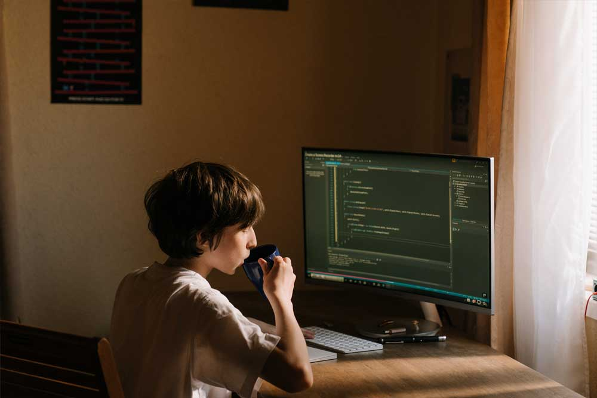

LORENZO GONZÁLEZ GASCÓN
CIPFP MISLATA
Vols saber més?
Posa't en contacte amb el coordinador Lorenzo, tècnic del skill Desenvolupament Web
lgonzalez@fpmislata.com
LORENZO GONZÁLEZ GASCÓN
CIPFP MISLATA
Vols saber més?
Posa't en contacte amb el coordinador Lorenzo, tècnic del skill Desenvolupament Web
lgonzalez@fpmislata.comContempla la planificació, disseny i construcció d'un lloc web.
Consisteix en la construcció i manteniment de pàgines web.
Els dissenyadors web utilitzen programes informàtics per a produir pàgines que inclouen enllaços a altres pàgines, gràfics, elements de text i fotografies. El disseny d'aquests elements pot ser presentat en forma de text o mitjançant dibuixos sobre paper.
Per a implementar aquestes idees, s'utilitzen programes informàtics, biblioteques de codi obert i entorns de desenvolupament (frameworks).
Un dissenyador web ha de comprendre tant la tecnologia com els valors artístics implicats en el procés. En els llocs web, la tecnologia s'utilitza per a automatitzar les funcionalitats i ajudar als administradors de contingut en el seu treball. Les habilitats creatives entren en joc per al disseny de colors, fonts i gràfics, així com per a la maquetació del lloc web. Un productor de llocs web deu també entendre els conceptes bàsics de gestió de projectes, producció de continguts i administració de llocs web.
Cicles formatius relacionats
Aplicacions
La seua aplicació s'estén tant a l'àmbit públic com al privat
i a tots els sectors productius.
S'utilitza com a element de difusió d'informació, venda de productes, recollida de dades, difusió de continguts, etc...
LORENZO GONZÁLEZ GASCÓN
CIPFP MISLATA
Vols saber més?
Posa't en contacte amb el coordinador Lorenzo, tècnic del skill Desenvolupament Web
lgonzalez@fpmislata.com